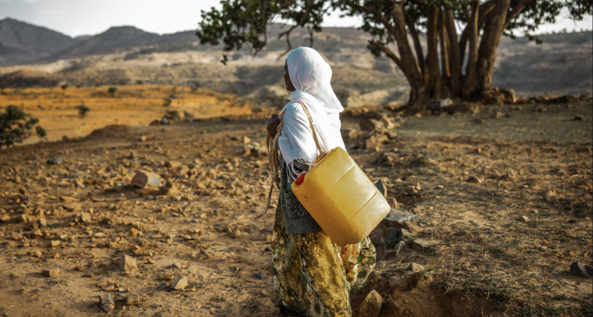

Real-World Impact
Clean water changes health, education, and opportunity.
Many families around the world still spend hours each day collecting water. When a community gains access to clean water, children have more time for school, families face fewer water-related illnesses, and local communities can build stronger futures.
Your support helps charity: water fund sustainable water projects that create long-term change.
